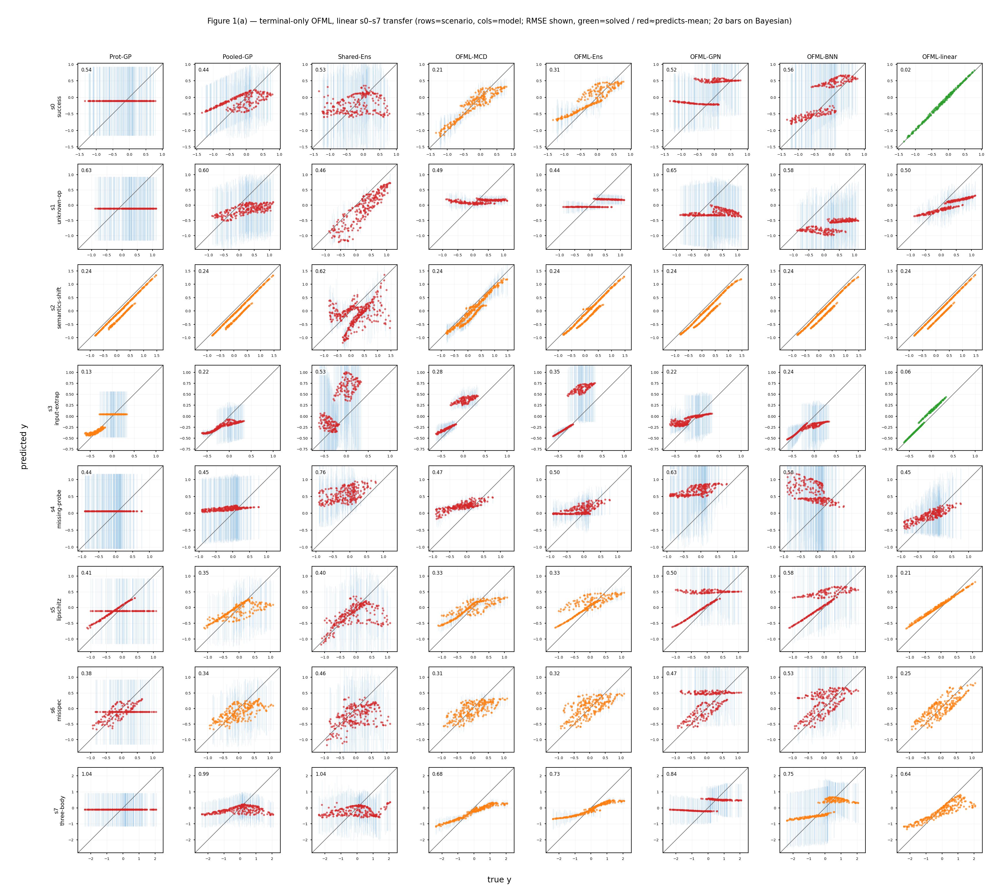
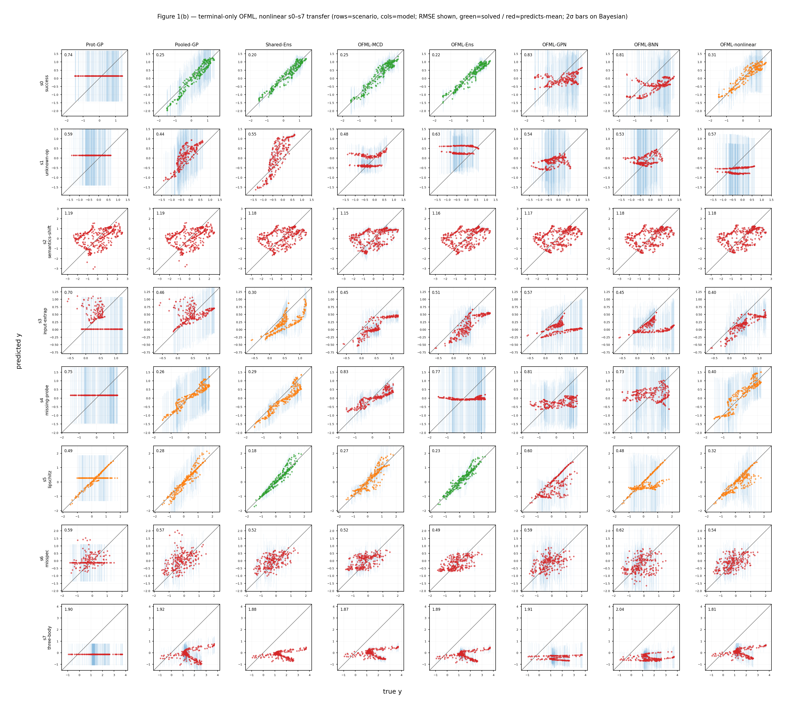
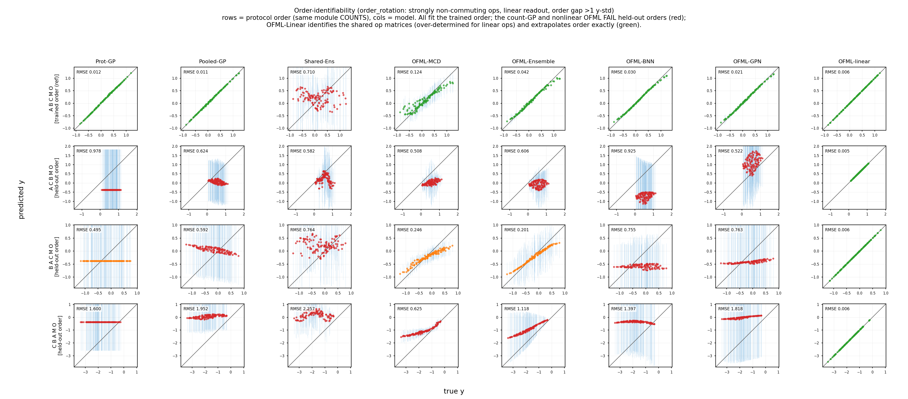
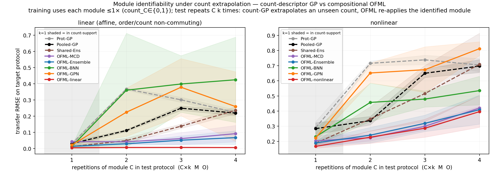
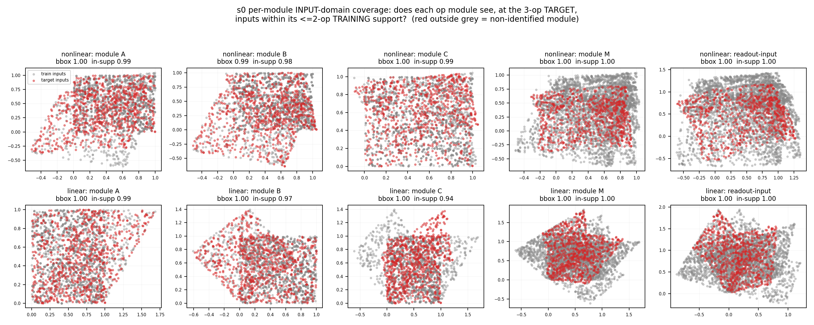
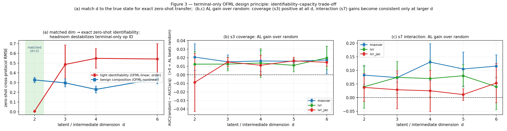
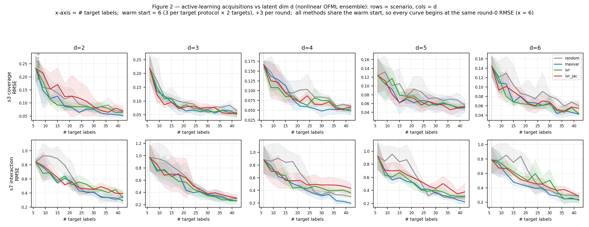

端末観測のみの OFML — 4 つの主張と、それを支える実験
端末観測のみの OFML は、プロトコルを共有された操作写像の合成として学習し、それらの写像が端末観測から識別可能であるときゼロショット転移できる。同じ端末観測のみという制約は内在的な失敗モード（未知操作・意味論シフト・誤特定読み出し・target のみの高次相互作用）も露呈させる。target の能動学習が閉ループ補正を与えるが、ランダムに対するサンプル効率上の優位はボトルネック（被覆か容量か）に依存する。最後に、観測器を通じて学習中に中間状態を記録すること — 操作出力の部分集合であっても — はこれらの限界を修復し、それを活用できるのはプロトコル合成的な代理モデルのみである。
共有操作モジュールの合成として扱うと、source で学んだ知識を未知 target へ再結合できる。順序・構造が本質的な場面で決定的。
未知操作・意味論シフト・誤特定・三体相互作用はゼロショットで識別不能。余剰容量は識別を不安定化しうる。
学習中の中間観測は識別不能→可能へ変換。使えるのは合成的モデルのみ（ブラックボックスには不活性）。
target ラベルで失敗した相互作用も補正。情報を用いた獲得がランダムに勝つには残差を表現できる容量が要る。
Experimental setting
共通設定
2 つの操作意味論ファミリを用いる。線形ファミリは面積保存アフィン操作＋線形読み出し（\(A\)=rot 40°、\(B\)=x-shear、\(C\)=座標入れ替え、\(D\)=rot −35°（\(s1\) のみ）、\(M\)=rot 25°、読み出し \(y=1.1s_0-0.7s_1+0.2\)）で、OFML-linear が容量一致モデル。非線形ファミリは sigmoid/tanh 操作＋非線形読み出し（ベース読み出しに高周波項 \(+0.25\sin(2\pi(s_0-s_1))\) を持ち、分布内でも既約な難易度下限を抱える）。語彙は \(\{A,B,C,D,M\}\)＋観測器 \(O\)。共通 source ＝ 9 プロトコル（単体＋両順序の全ペア：AMO, BMO, CMO, ABMO, BAMO, ACMO, CAMO, BCMO, CBMO）。プロトコルごとに学習入力 30 点（ノイズ \(\sigma=0.02\)）、ノイズなしテスト入力 120 点、3 シード。各シナリオは独立した転移設定であり、RMSE はシナリオ内（モデル間）で比較可能、シナリオ間では比較できない。
| シナリオ | ストレッサ | 実現 |
|---|---|---|
| s0 success | 分布内の合成 | target ＝ 未見の三つ組 ABC M O, CBA M O |
| s1 unknown-op | 未見の操作 | target が \(D\)（source に不在）を使用 |
| s2 semantics-shift | テスト意味論が異なる | source=base、target=shifted 系 |
| s3 input-extrap | テスト入力がサポート外 | source \(x\in[0,0.5]^2\)、target \(x\in[0.55,1]^2\) |
| s4 missing-probe | ソース文脈が少ない | source 集合を削減 |
| s5 lipschitz | ダイナミクス増幅 | high-gain / nonlinear_lipschitz |
| s6 misspec | フィット不能な読み出し | +高周波項 / nonlinear_misspecified |
| s7 three-body | \(\{A,B,C\}\) 全出現時のみの相互作用 | +存在ゲート付き \(s_0 s_1\) 項（ペア source では未見） |
| 手法 | 利用する構造 | モデル | 不確実性 |
|---|---|---|---|
| Prot-GP | プロトコル同一性 | プロトコルごとの RBF-GP | GP 事後 |
| Pooled-GP | 操作カウント | \([x,\text{count}(A..O),\text{variant}]\) 上の RBF-GP | GP 事後 |
| Shared-Ens | 操作カウント | 同一特徴上の 5-member MLP アンサンブル | ばらつき |
| OFML-MCD | 合成 | 合成ネット, MC-dropout, BO 選択 | dropout |
| OFML-Ens | 合成 | 合成ネット, 5-member 深層アンサンブル, BO 選択 | ばらつき |
| OFML-BNN | 合成 | 操作ごと tanh-MLP, HMC, \(d\)=5, h=16 | 事後 |
| OFML-GPN | 合成 | 操作ごとランダム特徴 GP(L=24), HMC, \(d\)=5 | 事後 |
| OFML-linear | 合成・線形操作 | 操作ごとに学習した行列, \(d\)=2（一致） | 再起動ばらつき |
| OFML-nonlinear | 合成・容量一致 | 合成 ReLU ネット, \(d\)=2, h=32 | ばらつき |
BO は頭打ちになる：非線形ファミリでは \(s0\) 検証 RMSE が 452〜\(10^5\) パラメータで ≈0.21–0.24 にとどまり（容量に非感応的）、これは容量不足ではなく端末観測のみに固有の識別可能性の下限と整合する。
主張 1 合成は転移を助ける
プロトコルをカテゴリや count 記述子ではなく共有操作モジュールの合成として扱うことで、source で学んだ操作知識を未知 target へ再結合できる。順序/構造が真に重要な場面で決定的。
合成が転移を助ける（存在証明＋正直な失敗）
検証： 端末 \(y\) のみで学習し、未知プロトコルをゼロショット予測できるか（線形/非線形, \(s0\)–\(s7\)）？
結果： 線形では容量一致 OFML-linear が \(s0\) を RMSE 0.02 で解き、学習可能な全ストレッサで先行。非線形分布内では count 記述子も競争的で OFML は匹敵。
order 識別可能性（非可換性）
検証： 操作数が同じで順序だけ異なるプロトコルを terminal-only で識別できるか？
結果： OFML-linear のみがホールドアウト order を復元（RMSE 0.006、他の ~80–200×）。count 記述子は構成上盲目、非線形/HMC 合成も失敗。
count 識別可能性（反復/外挿）
検証： 訓練で高々 1 回の操作を、テストで \(k\) 回反復（\(C^k M O\)）したとき外挿できるか？
結果： 決定論的合成 OFML は両ファミリで外挿（linear ≈0.006 で横ばい、nonlinear \(k\)=4 で count 記述子 ≈0.70 に対し ≈0.40）。count 記述子は劣化。
実験ページへ →主張 1 · 合成は転移を助ける
図 1 — 合成が転移を助ける（存在証明＋正直な失敗）
構造化された terminal-only 転移の存在証明であり、その正直な失敗とあわせて読むべきもの。プロトコルを共有操作モジュールの合成として扱えば、source で学んだ操作知識を未知 target へ再結合できる — 順序/構造が真に重要な場面で決定的である。

OFML-linear は合成構造が本質的な \(s0\) をほぼ完全に解く（クリックで拡大）。
Pooled-GP/Shared-Ens）も競争的であり、合成の鋭い優位は専用の order/count ベンチ（図 4・5）から生じる（クリックで拡大）。プロトコルをカテゴリや操作数（count）記述子ではなく共有操作モジュールの合成として扱うことで、source プロトコルで学習した操作知識を未知の target プロトコルへ再結合できることを示す。これは主張 1「合成は転移を助ける」の存在証明であり、識別可能性条件が満たされたとき 知識転移上界が経験的に意味を持つことの代表例である。
各手法を source プロトコル（端末 \(y\) のみ）で学習し、target プロトコルをゼロショットで予測する。グリッドは 行＝\(s0\)–\(s7\)、列＝手法。各セルは真値対予測値の散布図に平均±標準偏差 RMSE（ベイズモデルは 2σ バー）を付す。セルの色は視覚的補助のみで評価指標ではない：RMSE < 0.35·(y-std) なら緑、> 0.8·(y-std) なら赤、その間は琥珀（≈0.8·y-std はほぼ定数予測器に対応）。定量的主張はすべて下の RMSE 表を用いる。線形/非線形の 2 ファミリ、3 シード平均。
共通 source は 9 本（単体＋全ペアを両順序）。各シナリオは独立した転移設定で、target と x-range が異なる（3 シード、学習 30 点/σ=0.02、テスト 120 点）。
| シナリオ | 意味 | target | x-range (src / tgt) |
|---|---|---|---|
| s0 success | 分布内合成 | A B C M O, C B A M O | [0,1] / [0,1] |
| s1 unknown-op | 未見の操作 D | A D M O, D B M O | [0,1] / [0,1] |
| s2 semantics | 意味論シフト | A B M O, A C M O, B C M O | [0,1] / [0,1] |
| s3 input-extrap | 入力サポート外挿 | A B C M O, A B M O | [0,0.5] / [0.55,1] |
| s4 missing-probe | source 文脈の欠如 | B C M O, A B C M O | [0,1] / [0,1] |
| s5 lipschitz | 拡大的な M | A B C M O, A B M O | [0,1] / [0,1] |
| s6 misspec | 読み出しの誤特定 | A B C M O, A B M O | [0,1] / [0,1] |
| s7 three-body | target 限定の三体相互作用 | A B C M O, C B A M O | [0,1] / [0,1] |
真の写像 Fj†（データ生成元, 付録 A.1）
OFML-linear が容量一致）：FA=R(40°)s、FB=[[1,0.7],[0,1]]s（x-シアー）、FC=[[0,1],[1,0]]s（座標入替）、FD=R(−35°)s（s1 のみの未知操作）、FM=R(25°)s、FO=id、readout y=1.1·s₀−0.7·s₁+0.2。ストレッサ：shifted(s2)=各操作後 +(0.1,−0.05)；lipschitz(s5)=M→1.5·R(25°)；misspec(s6)=y+=0.35·sin(6π(s₀−s₁))；three_body(s7)={A,B,C}⊆steps のとき y+=1.8·s₀·s₁。非線形族 nonlinear（sigmoid/tanh 操作 + 非線形 readout。
OFML-nonlinear が容量一致）：FA=(2σ(2.4s₀−0.8s₁+0.1)−0.8, s₁)、FB=(s₀, 2σ(2.0s₁+0.7s₀−0.2)−0.8)、FC=(1.2·ss(2.2s₀+0.8s₁−1.0), 1.2·ss(2.0s₁−0.6s₀−0.6))（縮小的, Lipschitz<1）、FM=(s₀+0.4tanh(s₀−s₁), s₁+0.4tanh(s₀+s₁))、FO=id、readout y=1.4·ss(2s₀−1.6s₁+1.2s₀s₁−0.1)+0.25·sin(2π(s₀−s₁))（高周波 sin 項が既約な難易度下限）。4 変種：nonlinear_shifted(s2)/nonlinear_lipschitz(s5, 拡大的 M)/nonlinear_misspecified(s6)/nonlinear_three_body(s7, target 限定の三体項 +2.2s₀s₁+…)。モジュール型にカーソルを合わせると、共有される同一操作が全プロトコルで強調される（＝重み共有）。
線形ファミリ — 合成が決定的に勝つ。 容量一致 OFML-linear は \(s0\) を 0.02（非合成ベースラインの 0.44–0.56 に対して）で解き、学習可能な全ストレッサで先行（\(s3\) 0.06、\(s5\) 0.21、\(s6\) 0.25、\(s7\) 0.64）。BO 調整の OFML-MCD が 2 位につく。
| シナリオ | y-std | Prot-GP | Pooled-GP | Shared-Ens | OFML-MCD | OFML-Ens | OFML-GPN | OFML-BNN | OFML-linear |
|---|---|---|---|---|---|---|---|---|---|
| s0 success | 0.53 | 0.54 | 0.44 | 0.53 | 0.21 | 0.31 | 0.52 | 0.56 | 0.02 |
| s1 unknown-op | 0.49 | 0.63 | 0.60 | 0.46 | 0.49 | 0.44 | 0.65 | 0.58 | 0.50 |
| s2 semantics | 0.53 | 0.24 | 0.24 | 0.62 | 0.24 | 0.24 | 0.24 | 0.24 | 0.24 |
| s3 input-extrap | 0.25 | 0.13 | 0.22 | 0.53 | 0.28 | 0.35 | 0.22 | 0.24 | 0.06 |
| s4 missing-probe | 0.39 | 0.44 | 0.45 | 0.76 | 0.47 | 0.50 | 0.63 | 0.58 | 0.45 |
| s5 lipschitz | 0.50 | 0.41 | 0.35 | 0.40 | 0.33 | 0.33 | 0.50 | 0.58 | 0.21 |
| s6 misspec | 0.42 | 0.38 | 0.34 | 0.46 | 0.31 | 0.32 | 0.47 | 0.53 | 0.25 |
| s7 three-body | 1.04 | 1.04 | 0.99 | 1.04 | 0.68 | 0.73 | 0.84 | 0.75 | 0.64 |
非線形ファミリ — 競争的だが支配的ではない。 2 つの \(s0\) target（ABC M O, CBA M O）は非線形意味論下で強く順序分離されないため、count 記述子 Shared-Ens(0.20)/Pooled-GP(0.25) が強く、BO 調整 OFML-Ens(0.22) はそれに匹敵し較正も保つ。したがって非線形の鋭い合成的分離は図 4–5 から生じる。
| シナリオ | y-std | Prot-GP | Pooled-GP | Shared-Ens | OFML-MCD | OFML-Ens | OFML-GPN | OFML-BNN | OFML-nonlinear |
|---|---|---|---|---|---|---|---|---|---|
| s0 success | 0.74 | 0.74 | 0.25 | 0.20 | 0.25 | 0.22 | 0.83 | 0.81 | 0.31 |
| s1 unknown-op | 0.44 | 0.59 | 0.44 | 0.55 | 0.48 | 0.63 | 0.54 | 0.53 | 0.57 |
| s2 semantics | 1.26 | 1.19 | 1.19 | 1.18 | 1.15 | 1.16 | 1.17 | 1.18 | 1.18 |
| s3 input-extrap | 0.39 | 0.70 | 0.46 | 0.30 | 0.45 | 0.51 | 0.57 | 0.45 | 0.40 |
| s4 missing-probe | 0.75 | 0.75 | 0.26 | 0.29 | 0.83 | 0.77 | 0.81 | 0.73 | 0.40 |
| s5 lipschitz | 0.71 | 0.49 | 0.28 | 0.18 | 0.27 | 0.23 | 0.60 | 0.48 | 0.32 |
| s6 misspec | 0.56 | 0.59 | 0.57 | 0.52 | 0.52 | 0.49 | 0.59 | 0.62 | 0.54 |
| s7 three-body | 0.79 | 1.90 | 1.92 | 1.88 | 1.87 | 1.89 | 1.91 | 2.04 | 1.81 |
線形ファミリで OFML-linear が \(s0\) を RMSE 0.02 で解くことは、操作順序・合成が本質的で、かつ構造が識別可能なレジームでは合成が非合成ベースラインを大きく凌駕するという存在証明である。これは主張 1 を直接支える。一方、非線形分布内シナリオでは count 記述子も競争的であることを正直に明示し、OFML は匹敵しつつ較正を保つ — 過大主張しない。合成の鋭い優位は 図 4（order）・図 5（count）の専用ベンチで示す。
同図に現れる honest failures（未知操作 \(s1\)、非線形 \(s2\)、誤特定 \(s6\)、三体相互作用 \(s7\)）は、terminal-only の識別限界を示すもので、主張 2 で扱う。
主張 1 · 合成は転移を助ける
図 4 — order 識別可能性（非可換性）
操作数（count）が同じでも順序が違えば出力が変わる設定で、合成構造の必要性を示す。order を無視する count 記述子ベースラインは失敗し、容量一致の OFML-linear のみがホールドアウト order をほぼ完全に復元する。

count-GP と非線形 OFML はホールドアウト order で失敗（赤）、OFML-linear は共有操作行列を同定し order を厳密に外挿（緑）。操作数（count）が同一でも順序（order）が異なれば出力が変わる設定を用い、プロトコルを共有操作モジュールの合成として扱うことが必要であることを示す。これは主張 1「合成は転移を助ける」を order の側から支える：この図は、count 記述子ベースラインが構成上 order を無視して失敗する一方、容量一致の OFML-linear のみが未知の（ホールドアウト）order を 識別可能性条件のもとでほぼ完全に外挿できることを示す。
専用セマンティクス order_rotation を用いる：強く非可換な操作（回転／座標入れ替え／せん断）＋線形読み出し。各単一プロトコルは自明に当てはめ可能（プロトコルごと \(R^2\) 約 1.0）だが、order のギャップが 1 y-std を超えるよう調整し、唯一の困難が操作の順序になるようにした。学習は充実しており各操作をあらゆる位置で経験する。学習済み order A B C M O（参照）と、モジュール数が同一の 3 つのホールドアウト order（A C B M O, B A C M O, C B A M O）をテストする。グリッドは 行＝order、列＝モデル。
リッチな source（12 本：全ペアを両順序＋3 種の三つ組）で各操作をあらゆる位置に登場させ、共有操作を識別可能にする。target は同一 count・順序のみ相違の 3 本（count 記述子は盲目）。学習 40 点。
真の写像 Fj†（データ生成元, 付録 A.1(c)）
モジュール型にカーソルを合わせると、共有される同一操作が全プロトコルで強調される（＝重み共有）。
OFML-linear のみが order を外挿する。 全モデルが学習済み order A B C M O は当てはめられるが、ホールドアウト order では count 記述子ベースラインも非線形/HMC 合成モデルも失敗する。OFML-linear は全 order で RMSE 約 0.006 と横ばいで、他のどのモデルよりも約 80〜200 倍良い。
| モデル | 学習済み ABCMO | ホールドアウト（3 order 平均） | 最難 CBAMO |
|---|---|---|---|
| Prot-GP | 0.012 | 1.02 | 1.60 |
| Pooled-GP | 0.011 | 1.06 | 1.95 |
| Shared-Ens | 0.710 | 1.20 | 2.26 |
| OFML-MCD | 0.124 | 0.46 | 0.63 |
| OFML-Ensemble | 0.042 | 0.64 | 1.12 |
| OFML-BNN | 0.030 | 1.03 | 1.40 |
| OFML-GPN | 0.021 | 1.03 | 1.82 |
| OFML-linear | 0.006 | 0.006 | 0.006 |
OFML-linear のみがホールドアウト order を復元する（RMSE 約 0.006、他のどのモデルよりも約 80〜200 倍良い）。Pooled-GP のような count 記述子ベースラインは構成上 order を無視するため（ホールドアウト約 1.06）失敗する。決定的に、非線形/HMC の合成モデルも失敗する（OFML-MCD 0.46、OFML-Ensemble 0.64、OFML-GPN/OFML-BNN 約 1.0）：単一の端末スカラーは合成状態の 1 次元射影しか観測しないため、過剰パラメータ化／非線形サロゲートには非可換操作の order が劣決定となる。線形操作かつ容量一致（\(d=2\)）のとき、端末観測のみの系は過剰決定となり設計上識別可能であり — これが OFML-linear が解ける理由である。一般の（非線形）order 識別には中間観測が必要であり、これは今後の課題（主張 3）となる。
これは order 側の半分である：合成は order を表現するために必要であり、構造が線形で潜在次元が一致するときのみ十分である（図 3a を参照）。
主張 1 · 合成は転移を助ける
図 5 — count 識別可能性（反復 / 外挿）
訓練で各モジュールを高々1回しか使わないのに、テストでは同一モジュールを k 回反復する。count 記述子ベースラインは count 特徴の外挿に失敗しやすいが、OFML は識別済みモジュールを繰り返し適用するだけで外挿できる。

C×k M O）。左＝線形、右＝非線形。k=1 は count サポート内（網掛け）。count 記述子（Pooled-GP/Shared-Ens）は k とともに劣化、決定論的合成 OFML は外挿する。このページは主張 1「合成は転移を助ける」を、count（操作回数）方向の外挿という切り口で支える。訓練では各モジュールを高々 1 回しか使わない（count_C \(\in\{0,1\}\)）にもかかわらず、テストではモジュール C を k 回反復する。プロトコルを count 記述子として扱うモデルは、一度も変化させていない特徴量を外挿しなければならず失敗しやすい。対して OFML は識別済みモジュール C を単に k 回再適用するだけで外挿できる。この図は、合成として扱うことが count 方向の未知 target への再結合を可能にすることを示す。
学習プロトコルは各モジュールを高々 1 回（count_C \(\in\{0,1\}\)）使用する。テストプロトコルはモジュール C を \(k=1,2,3,4\) 回反復する（C×k M O）。\(k=1\) では count は学習サポート内（網掛け）であり、\(k\ge2\) では count 記述子モデルにとってサポート外となる。公平なテストの前提は、\(C^k\) 連鎖が横断する入力領域で C が識別可能であること — そのため学習の設計 \(x\) を \([-1,1]\) に広げ、非線形 \(C^3\) 入力の被覆を約 7% から約 100% へ引き上げた。テストは \(x\in[0,1]\)（部分集合）なので count_C \(\ge2\) はベースラインにとってサポート外のままである。線形/非線形の 2 ファミリ、3 シード平均。
source は各操作 ≤1（すなわち count_C ∈ {0,1}）の 16 本。target はモジュール C を k=1..4 回反復（C×k M O）。k=1 は count サポート内、k≥2 は count 記述子には外挿。source x∈[−1,1]、テスト x∈[0,1]、学習 32 点。
真の写像 Fj†（データ生成元, 付録 A.1(e) 線形 / (b) 非線形）
非線形族 nonlinear（sigmoid/tanh 操作 + 非線形 readout。
OFML-nonlinear が容量一致）：FA=(2σ(2.4s₀−0.8s₁+0.1)−0.8, s₁)、FB=(s₀, 2σ(2.0s₁+0.7s₀−0.2)−0.8)、FC=(1.2·ss(2.2s₀+0.8s₁−1.0), 1.2·ss(2.0s₁−0.6s₀−0.6))（縮小的, Lipschitz<1）、FM=(s₀+0.4tanh(s₀−s₁), s₁+0.4tanh(s₀+s₁))、FO=id、readout y=1.4·ss(2s₀−1.6s₁+1.2s₀s₁−0.1)+0.25·sin(2π(s₀−s₁))（高周波 sin 項が既約な難易度下限）。4 変種：nonlinear_shifted(s2)/nonlinear_lipschitz(s5, 拡大的 M)/nonlinear_misspecified(s6)/nonlinear_three_body(s7, target 限定の三体項 +2.2s₀s₁+…)。モジュール型にカーソルを合わせると、共有される同一操作が全プロトコルで強調される（＝重み共有）。
各モデルは \(k=1\)（count サポート内）では並ぶが、k が大きくなると差が開く。count 記述子ベースライン（Shared-Ens・Pooled-GP・Prot-GP）は劣化し、決定論的合成 OFML（OFML-linear/OFML-nonlinear）は本質的に横ばいのまま外挿する。
| モデル | linear k1 | k2 | k3 | k4 | nonlinear k1 | k2 | k3 | k4 |
|---|---|---|---|---|---|---|---|---|
| OFML-linear / OFML-nonlinear | 0.005 | 0.007 | 0.007 | 0.006 | 0.167 | 0.227 | 0.287 | 0.396 |
| OFML-Ensemble | 0.014 | 0.030 | 0.052 | 0.068 | 0.189 | 0.241 | 0.319 | 0.409 |
| OFML-MCD | 0.043 | 0.042 | 0.061 | 0.092 | 0.203 | 0.224 | 0.299 | 0.420 |
| Shared-Ens | 0.012 | 0.049 | 0.138 | 0.237 | 0.188 | 0.348 | 0.516 | 0.709 |
| Pooled-GP | 0.031 | 0.112 | 0.249 | 0.219 | 0.284 | 0.337 | 0.650 | 0.697 |
| Prot-GP | 0.029 | 0.368 | 0.301 | 0.223 | 0.290 | 0.716 | 0.739 | 0.704 |
合成は外挿し、count 記述子は劣化する。 線形族では count 記述子ベースラインが劣化する（Shared-Ens 0.012→0.237、Pooled-GP →0.219）一方で、OFML-linear は本質的に横ばい（全 k で約 0.006）、OFML-Ensemble も 0.068 にとどまる。非線形族でも同様に Shared-Ens →0.709、Pooled-GP →0.697 と劣化する一方、合成モデル（k=4 で OFML-nonlinear 0.396、OFML-Ensemble 0.409、OFML-MCD 0.420）は count 記述子（約 0.70）を明確に上回り、約 1.7 倍の分離を示す。
この結果は主張 1「合成は転移を助ける」を count 方向で直接支える。すべてのモデルが \(k=1\)（count サポート内）では並ぶのに対し、\(k\ge2\) では count をプロトコル記述子として扱うベースラインは一度も変化させていない特徴量を外挿できず劣化する。決定論的合成 OFML は識別済みモジュール C を単に k 回再適用するだけで外挿でき、これが「プロトコルを共有操作モジュールの合成として扱えば、source で学んだ操作知識を未知 target へ再結合できる」ことの count 版の実証である。
ただし 2 つの誠実な留保がある：(i) 公平な非線形結果は識別可能性の前提修正（学習入力領域を \([-1,1]\) に広げる）を必要とした。修正前は C が \(C^3\) 入力上で識別されず分離が消失した。(ii) ベイズ合成バリアント（OFML-BNN/OFML-GPN）は count を確実には外挿しない（linear k4 0.425/0.259、nonlinear 0.535/0.812）— count 外挿は決定論的合成ネットの性質である。
本図は 図 4（order）と相補的である：count/反復は両族で決定論的合成 OFML について端末観測のみで識別可能だが、order/非可換性は容量一致の線形合成の下でのみ識別可能である。存在証明とその正直な失敗は 図 1で扱う。
主張 2 端末観測のみの学習には識別可能性の限界がある
中間トレースなしでは、すべての操作意味論や高次相互作用がゼロショットで識別可能なわけではない。余剰容量は厳密識別が逼迫するとき演算子同定を不安定化しうる。
terminal-only の識別限界（honest failures）
検証： 未知操作 \(s1\)・意味論シフト \(s2\)・誤特定 \(s6\)・三体相互作用 \(s7\) はゼロショットで識別できるか？
結果： いずれも全モデルで失敗（\(s7\) RMSE ≈1.8–1.9、非線形 \(s2\) ≈1.18）。source に現れない項は端末誤差から制御できない — 設計上の限界。
実験ページへ →識別可能性と容量のトレードオフ
検証： 潜在次元 \(d\) を真の状態次元より大きくすると何が起きるか？
結果： 厳密識別可能な線形 order では \(d\)=2（一致）が 0.006、\(d\ge3\) で ≈0.5（約 80× 劣化）。良性の非線形合成には崖なし（≈0.23–0.34）。
実験ページへ →主張 2 · 端末観測のみの学習には識別可能性の限界がある
図 1 の失敗 — terminal-only の識別限界
同じ図1の中に現れる正直な失敗。中間トレースなしでは、すべての操作意味論や高次相互作用がゼロショットで識別可能なわけではない。これは OFML の欠陥ではなく terminal-only 観測の識別可能性限界であり、ゼロショット主張の及ぶ範囲を画定する。

diag_s0_module_inputs.py）。赤＝target 入力、灰＝学習サポート。ミキサ \(M\) への3操作分深い入力と読み出しを含め、全モジュールの target 入力が学習サポート内に約98〜100%収まる（in-supp 0.94〜1.00）。したがって非線形 \(s0\) の床は入力外挿の破綻ではなく識別可能性の問題である。本ページは主張 2「端末観測のみの学習には識別可能性の限界がある」を支える。図 1 は合成による転移の存在証明であると同時に、同じグリッドの中にすべての手法が共通して外す行を含む。ここではその正直な失敗（honest failures）を取り出し、terminal-only 観測からは何がゼロショットで識別可能で、何が識別可能でないかを画定する。すなわち \(s1\)（未見の操作）、非線形 \(s2\)（意味論シフト）、\(s6\)（読み出しの誤特定）、\(s7\)（三体相互作用）は端末 \(y\) だけからは識別可能ではなく、どのモデルでも外れる。これは OFML の容量不足ではなく、観測モダリティに内在する識別可能性の限界であることを示すのが目的である。
設定は図 1と共通で、各手法を source プロトコル（端末 \(y\) のみ）で学習し、target プロトコルをゼロショットで予測する。ここでは非線形ファミリの図 1b を再掲し、全手法が一致して外す行（honest failures）に注目する。数値は 3 シード平均の RMSE、\(s0\) の床は BO 調整下の値である。Prot-GP は未見プロトコルを表現できずどこでも平均を予測する参照点として含む。OFML-GPN／OFML-BNN は合成非線形ネットに対する HMC 事後を持つベイズ変種である。
共通 source は s0–s7 と同じ 9 本。失敗シナリオでは、source に無い成分（s1 の D、s7 の三体項）や意味論シフト（s2）・誤特定（s6）が target に現れる。
| シナリオ | ストレッサ | target |
|---|---|---|
| s1 unknown-op | source に無い操作 D | A D M O, D B M O |
| s2 semantics | source=base → target=shifted | A B M O, A C M O, B C M O |
| s6 misspec | フィット不能な読み出し | A B C M O, A B M O |
| s7 three-body | {A,B,C} 全出現時のみの相互作用 | A B C M O, C B A M O |
真の写像 Fj†（データ生成元, 付録 A.1）
OFML-nonlinear が容量一致）：FA=(2σ(2.4s₀−0.8s₁+0.1)−0.8, s₁)、FB=(s₀, 2σ(2.0s₁+0.7s₀−0.2)−0.8)、FC=(1.2·ss(2.2s₀+0.8s₁−1.0), 1.2·ss(2.0s₁−0.6s₀−0.6))（縮小的, Lipschitz<1）、FM=(s₀+0.4tanh(s₀−s₁), s₁+0.4tanh(s₀+s₁))、FO=id、readout y=1.4·ss(2s₀−1.6s₁+1.2s₀s₁−0.1)+0.25·sin(2π(s₀−s₁))（高周波 sin 項が既約な難易度下限）。4 変種：nonlinear_shifted(s2)/nonlinear_lipschitz(s5, 拡大的 M)/nonlinear_misspecified(s6)/nonlinear_three_body(s7, target 限定の三体項 +2.2s₀s₁+…)。モジュール型にカーソルを合わせると、共有される同一操作が全プロトコルで強調される（＝重み共有）。
全手法に共通する正直な失敗。 \(s1\)（未見の操作、線形・非線形とも約 0.5）、非線形 \(s2\)（意味論シフト、全手法で約 1.18；対照的に線形 \(s2\) は全手法で緩やかな約 0.24）、\(s6\)（読み出しの誤特定）、\(s7\)（三体相互作用、RMSE 約 1.8〜1.9）は、端末観測からゼロショットで識別可能ではないため、どのモデルも外す。Prot-GP はどこでも平均を予測し、未見プロトコルを表現できない。OFML-GPN／OFML-BNN は非線形 \(s0\) で最も弱く（0.83／0.81）、合成非線形ネットへの HMC 事後は端末信号だけからは演算子を鋭く識別しない。
| シナリオ | y-std | Prot-GP | Pooled-GP | Shared-Ens | OFML-MCD | OFML-Ens | OFML-GPN | OFML-BNN | OFML-nonlinear |
|---|---|---|---|---|---|---|---|---|---|
| s1 unknown-op | 0.44 | 0.59 | 0.44 | 0.55 | 0.48 | 0.63 | 0.54 | 0.53 | 0.57 |
| s2 semantics | 1.26 | 1.19 | 1.19 | 1.18 | 1.15 | 1.16 | 1.17 | 1.18 | 1.18 |
| s6 misspec | 0.56 | 0.59 | 0.57 | 0.52 | 0.52 | 0.49 | 0.59 | 0.62 | 0.54 |
| s7 three-body | 0.79 | 1.90 | 1.92 | 1.88 | 1.87 | 1.89 | 1.91 | 2.04 | 1.81 |
\(s7\)（三体相互作用）はいかなる操作の局所状態からも識別可能ではない。 これは A, B, C がすべて出現するときのみ現れるプロトコルレベルの項（存在ゲート付き \(s0{\cdot}s1\) 項）であり、あらゆるペア source に存在しないためゼロショットでは未見である。したがって全手法が RMSE 約 1.8〜1.9 で一致して外す。
非線形 \(s0\) の床も容量不足ではなく識別可能性の問題。 BO 調整下で約 0.21〜0.24 に頭打ちし \(d\) に非感応であるが、モジュールごとの入力被覆診断では全モジュールの target 入力が学習サポート内に約 98〜100% 収まっており、入力外挿の破綻ではない。約 0.30·(y-std) は図 1 のルーブリックでは「解決済み」帯の内側にある。
これらの失敗こそが主張 2 の中身である。端末観測のみでは、source 上の観測誤差が小さくても target 上で異なる出力を与える候補モデルが残る。知識転移上界（定理 1）では、この差は識別残差 \(r^{\mathrm{id}}\) と被覆残差 \(\rho\) として上界に残る（source で同一観測でも target 観測ノードで異なる候補が残る）。したがって未知操作・意味論シフト・誤特定読み出し・target のみの高次相互作用はゼロショットでは識別できず、これは OFML の欠陥ではなく terminal-only 観測の識別可能性限界である。
この失敗集合は、terminal-only 観測から何が識別可能かを問うストレステストとして読むべきものであり、ゼロショット主張の及ぶ範囲を画定する。補正の方向は 2 つある：中間観測（主張 3）と閉ループの能動学習（主張 4）である。識別可能性と容量のトレードオフ（図 3a の余剰容量の不安定化）については 図 3a のトレードオフで扱う。
主張 2 · 端末観測のみの学習には識別可能性の限界がある
図 3a — 識別可能性と容量のトレードオフ
潜在次元 \(d\) を真の状態次元に一致させると厳密なゼロショット識別可能性に有利だが、余剰容量（headroom）は厳密な識別可能性が逼迫しているとき、端末観測のみの演算子識別を不安定化しうる。

OFML-linear/order）、青＝良性の非線形合成。\(d=2\)（一致）が緑帯で、赤は \(d\ge 3\) で急劣化。（右2枚 b,c は c3-gain.html で扱う。）（クリックで拡大）本ページは主張 2「端末観測のみの学習には識別可能性の限界がある」を、容量（潜在次元 \(d\)）の観点から支える。図 3a は、潜在次元 \(d\) に対するゼロショットのプロトコル間外挿 RMSE を、識別可能性がタイトなタスク（強く非可換な線形 order タスク上の OFML-linear）と、良性の非線形合成（OFML-nonlinear）の 2 つで示す。目的は、terminal-only では「容量を大きくすればよい」が一般に成り立たず、真の状態次元に整合した容量選択が厳密なゼロショット転移に必要であることを示すことである。
設計原理として、潜在/中間次元 \(d\) を系統的に掃引し、各 \(d\) に対してゼロショットのプロトコル間外挿 RMSE を測る。識別可能性がタイトなレジームは強く非可換な線形 order タスク上の OFML-linear で代表させ、良性のレジームは OFML-nonlinear（良性の非線形合成）で代表させる。両者を同じ \(d\) の格子（\(d=2,3,4,6\)）上で比較する。
本図は 2 つのタスク族を横断する。タイト ID＝ order タスク（source 12・target ホールドアウト order）、良性合成＝非線形合成（source 9・target A B C M O）。潜在次元 d を掃引する。
真の写像 Fj†（データ生成元, 付録 A.1(c) order / (b) 非線形）
非線形族 nonlinear（sigmoid/tanh 操作 + 非線形 readout。
OFML-nonlinear が容量一致）：FA=(2σ(2.4s₀−0.8s₁+0.1)−0.8, s₁)、FB=(s₀, 2σ(2.0s₁+0.7s₀−0.2)−0.8)、FC=(1.2·ss(2.2s₀+0.8s₁−1.0), 1.2·ss(2.0s₁−0.6s₀−0.6))（縮小的, Lipschitz<1）、FM=(s₀+0.4tanh(s₀−s₁), s₁+0.4tanh(s₀+s₁))、FO=id、readout y=1.4·ss(2s₀−1.6s₁+1.2s₀s₁−0.1)+0.25·sin(2π(s₀−s₁))（高周波 sin 項が既約な難易度下限）。4 変種：nonlinear_shifted(s2)/nonlinear_lipschitz(s5, 拡大的 M)/nonlinear_misspecified(s6)/nonlinear_three_body(s7, target 限定の三体項 +2.2s₀s₁+…)。モジュール型にカーソルを合わせると、共有される同一操作が全プロトコルで強調される（＝重み共有）。
厳密に識別可能な線形転移では、真の状態に整合した \(d=2\) が共有演算子を復元し本質的に完全に外挿する（RMSE 0.006）。余剰容量（\(d\ge 3\)）があると端末観測のみの系が劣決定になりこれを破壊し、RMSE は約 0.5 に跳ね上がる（約 80 倍の悪化）。一方、良性の非線形合成にはこのような崖はなく、\(d\) にわたって中程度の帯（約 0.23〜0.34、\(d=4\) で最良）にとどまる。
| 潜在次元 \(d\) | タイト ID (OFML-linear/order) | 良性 (OFML-nonlinear) |
|---|---|---|
| d=2（一致） | 0.006 | 0.327 |
| d=3 | 0.486 | 0.297 |
| d=4 | 0.549 | 0.230 |
| d=6 | 0.542 | 0.340 |
したがって、余剰容量が破滅的なのは識別可能性がタイトな領域に限られ、一般には当てはまらない。良性の非線形合成では \(d\) を変えても崖は現れない。
この結果は、terminal-only では「容量を大きくすればよい」が一般には成り立たないことを直接示す。識別可能性がタイトなレジームでは、真の状態次元に近い 適切な容量 \(d\) を選ぶことが厳密ゼロショット転移に必要であり、余剰容量はむしろ端末観測のみの演算子識別を劣決定化して崩壊させる（\(d=2\) の 0.006 に対し \(d\ge 3\) は約 0.5）。これは端末観測のみの学習に識別可能性の限界があるという主張 2 の核心を裏づける。
ただし、この崖は識別可能性がタイトな領域に限定される現象であって、良性の非線形合成には現れない。残差的な目標相互作用への適応には潜在的余裕＋能動学習が有効であり（主張 4、c3-gain.html／c3-dsweep.html）、設計上は source-to-target transfer と target active correction の両方を考慮する必要がある。
主張 3 中間観測は識別可能性の限界を修復する — 使えるのは合成的モデルのみ
学習中に中間状態を記録すること（操作出力の部分集合でも）は、端末観測のみに欠けている信号を供給する。ブラックボックスは同じ観測（prefix-readout 拡張）を受け取っても使えない — 付随させる潜在モジュールが無いためである。
s0 中間観測アブレーション（16 サブセット×8 モデル）
検証： 学習中の中間観測は、terminal-only で横ばいの非線形 \(s0\) を改善するか？誰が使えるか？
結果： 合成 OFML はブラックボックスを追い抜く（OFML-nonlinear 0.43→0.11, OFML-Ens 0.23→0.14）。ブラックボックスは同じ観測でも改善せず（Pooled-GP 0.25→0.28）。
観測下の order 識別（線形）
検証： 中間観測は、端末読み出しでは解けない線形 order を識別可能にするか？
結果： 柔軟な OFML が ≈0.56→≈0.10（設計上識別可能な OFML-linear の 0.002 に接近）。count 記述子は横ばい（1.0–1.2）。
観測下の order 識別（非線形）
検証： 非線形 order でも中間観測は効くか？最小限の観測は何か？
結果： 3 つの合成 OFML が ≈0.50→≈0.32。単一操作型 \(\{A\}\) の観測で到達（完全観測不要）。誤特定線形はほぼ恩恵なし（0.51→0.42）。
実験ページへ →観測下の count 識別と反復失敗の制御
検証： 中間観測下で count 外挿は安定か？反復 \(C^k\) の発散をどう防ぐか？
結果： count+order 統合 BO で容量一致 \(d\)=2 が全 16 サブセットで発散せず（最悪 \(k\)=4 RMSE 14.6→1.25、発散 5/16→0/16）。原因はゲージ→Lipschitz>1。
実験ページへ →主張 3 · 中間観測は識別可能性の限界を修復する
図 6 — s0 中間観測アブレーション（16 サブセット × 8 モデル）
学習中に中間状態を観測することは、terminal-only で横ばいだった非線形 \(s0\) を count 記述子の床の下まで押し下げる — そしてそれを活用できるのは合成的モデルのみ。ブラックボックスは同じ観測を prefix-readout 行として与えられても改善しない。

terminal-only 観測では識別できない構造が、学習中に中間状態を観測することで回復できるか、そしてそれを活用できるのがどの種類のモデルかを切り分ける。この図は主張 3「中間観測は識別可能性の限界を修復する」を直接支える：非線形 \(s0\) は端末観測のみでは横ばいだが、中間観測を与えると合成 OFML はすべてのブラックボックスを追い抜き、count 記述子の床の下まで RMSE を押し下げる。一方でブラックボックスは同一の観測情報を prefix-readout として渡されても改善せず、修復信号が演算子を表現できる代理モデルにのみ活性であることを示す。
独立変数は、学習中にその位置へ観測器（測定器モジュール）を置き真の 2 次元出力を観測する操作型の集合 \(S \subseteq \{A,B,C,M\}\)（全 16 サブセット、空＝端末のみ から 完全内部トレース \(\{A,B,C,M\}\) まで）。観測はクリーン（ノイズなし）かつ学習時のみで、評価は厳密に端末観測のみ。合成 OFML は観測される各操作型 op に学習された操作ごとの観測器 \(O_{\mathrm{op}}\)（潜在 \(d\) 次元→2 次元）を付加し、補助的な潜在トレース教師損失（端末損失＋観測型ごとの二乗誤差）を加える。ブラックボックスは潜在モジュールを持たないため、同じ情報を prefix-readout 拡張として受け取る（観測される各接頭辞について学習行を追加）。報告は traceablation2（count 安定性＋order 識別を組み合わせた BO で選ばれたアーキテクチャ）。
中間観測は、被観測操作型 op ∈ S（S ⊆ {A,B,C,M}）の位置に観測器モジュール O_op を置き、その出力を学習時のみ観測して実現する。O_op が観測するのはその操作を適用した直後の真の 2 次元状態 state*_op = s_v† = F_op†(z_v†)（post-op・ノイズなし）— すなわち O_A は「A 適用直後の (s₀,s₁)」、O_M は「M 適用直後の状態」を観測する。D はこれらのプロトコルに現れず、端末観測器 O は既に端末で観測済みなので S には含めない。
OFML 側（合成モデル）：各被観測操作型に操作型ごとに別々の学習可能な観測器 O_op : ℝᵈ→ℝ²（バイアスなし線形）を付け、補助損失 Σ_{op∈S} ‖O_op(s_op) − state*_op‖² を端末損失に加える（d=2 なら 2×2 整列、d>2 なら d→2 射影）。共有 1 枚の整列にしないのは、そのゲージ自由度（縮小的/拡大的実現の非識別）を除去し count C^k 発散を抑えるためである。
並列・非破壊の側枝：合成の本流は潜在 s ← g_θ_op(s) を d 次元のまま伝播し、下流操作（例: B）は前段（例: A）の潜在 s そのものを受け取る。O_op(s) はその時点の潜在を 2 次元へ写す並列の読み出しヘッドにすぎず、補助損失を与えるだけで s を書き換えない。したがって O_A は B に接続されず、観測を入れても順伝播グラフと合成は不変で、観測は潜在への追加の勾配制約としてのみ作用する（試料を変えない非破壊測定の類似）。d>2 のモデルでは潜在が観測 2 次元より多くの情報を保持し、O_op はその d→2 射影を学習する。
ブラックボックス側は観測器を持たない：付随させる潜在モジュールがないため、prefix-readout 拡張で同じ情報を与える — 各被観測位置 t について、接頭辞プロトコル op₁ … op_t O の端末 readout をスカラー y = readout(state*_after_t) として観測する訓練行を追加する。よって O_A, O_B, O_C, O_M は OFML 専用であり、ブラックボックスは接頭辞のスカラー読み出しのみを受け取る。
s0 success（非線形族）を再利用（source 9・target A B C M O/C B A M O）。加えて、学習時のみ観測する操作型の部分集合 S ⊆ {A,B,C,M}（全 16）を独立変数とする（評価は端末のみ）。S=∅ は Fig 1 非線形 s0 を再現。
真の写像 Fj†（データ生成元, 付録 A.1(b)）
OFML-nonlinear が容量一致）：FA=(2σ(2.4s₀−0.8s₁+0.1)−0.8, s₁)、FB=(s₀, 2σ(2.0s₁+0.7s₀−0.2)−0.8)、FC=(1.2·ss(2.2s₀+0.8s₁−1.0), 1.2·ss(2.0s₁−0.6s₀−0.6))（縮小的, Lipschitz<1）、FM=(s₀+0.4tanh(s₀−s₁), s₁+0.4tanh(s₀+s₁))、FO=id、readout y=1.4·ss(2s₀−1.6s₁+1.2s₀s₁−0.1)+0.25·sin(2π(s₀−s₁))（高周波 sin 項が既約な難易度下限）。4 変種：nonlinear_shifted(s2)/nonlinear_lipschitz(s5, 拡大的 M)/nonlinear_misspecified(s6)/nonlinear_three_body(s7, target 限定の三体項 +2.2s₀s₁+…)。モジュール型にカーソルを合わせると、共有される同一操作が全プロトコルで強調される（＝重み共有）。
下表は非線形 \(s0\) の target RMSE を、空（端末のみ）と最良観測サブセット（3 シード平均）で対比する。空では最良の端末のみモデルはブラックボックス Shared-Ens（0.203）で、合成 OFML はそれと同程度（OFML-Ens 0.234、OFML-nonlinear 0.428）。中間状態が観測されると、合成モデルはすべてのブラックボックスを追い抜き（OFML-nonlinear 0.428→0.113、OFML-Ens 0.234→0.144）、ブラックボックスの下限（Pooled-GP 0.25、Shared-Ens 0.18）を大きく下回る。対照的にブラックボックスは prefix-readout 行として同一の観測を与えられても改善しない：Pooled-GP はむしろ悪化（0.247→0.277）、Prot-GP は完全に横ばい（0.745→0.745）。
| モデル | 空（端末のみ） | 最良観測（サブセット） |
|---|---|---|
| OFML-nonlinear | 0.428 | 0.113（AM、最良） |
| OFML-Ensemble | 0.234 | 0.144（ABCM） |
| OFML-MCD | 0.303 | 0.151（BCM） |
| OFML-BNN | 0.849 | 0.351（BCM） |
| OFML-GPN | 0.745 | 0.434（BC） |
| Shared-Ens（ブラックボックス） | 0.179（AB） | 0.203 |
| Pooled-GP（ブラックボックス） | 0.247 | 0.277（悪化） |
| Prot-GP（ブラックボックス） | 0.745 | 0.745（横ばい） |
OFML-nonlinear はミキサ \(M\) が観測されたとき最も改善する（M 0.158、AM 0.113、BM 0.134）。これは \(s0\) の非線形的難しさが \(M\) に集中しているためで、その出力を直接観測すると潜在フレームが固定される。
端末観測のみでは、非線形 \(s0\) はブラックボックスの count 記述子（Shared-Ens 0.18、Pooled-GP 0.25）が床を作り、合成 OFML もそれと同程度にとどまる — 図 1 で見た terminal-only の識別限界そのものである。学習中に中間状態を観測すると、その床は合成モデルに対してのみ破られる：OFML-nonlinear は 0.428→0.113、OFML-Ens は 0.234→0.144 とブラックボックスの下限を大きく下回る。決定的なのは、同一の観測情報を prefix-readout 行として与えられたブラックボックスが改善しない（Pooled-GP は悪化、Prot-GP は横ばい）ことである。つまり中間観測がもたらす識別信号は、演算子を潜在モジュールとして表現できる代理モデルにのみ活性であり、フラットな写像には不活性である。ミキサ \(M\) の観測が最も効く（AM 0.113）ことは、非線形的難しさが \(M\) に集中し、その出力観測が潜在フレームを固定するという機構的説明を与える。以上は主張 3 を直接支える。
主張 3 · 中間観測は識別可能性の限界を修復する
図 7 — 観測下の order 識別可能性（線形）
線形 order ストレスでは、端末観測のみでは解けなかった操作 order を、学習中の中間観測が識別可能にする — ただし合成的モデルに限る。柔軟なニューラル OFML が約0.56から約0.10へ救済される。

このページは主張 3「中間観測は識別可能性の限界を修復する」を支える。学習中に中間状態を記録することが、端末観測のみでは欠けている識別信号を供給しうることを示す。図 4の order 設計を、各観測サブセット \(S \subseteq \{A,B,C,M\}\) の下で再実行し、端末読み出しだけでは解けない操作 order を中間観測が識別可能にするかを問う。
order 設計（線形、order_rotation）を、各観測サブセット \(S \subseteq \{A,B,C,M\}\) の下で再実行する（学習時のみクリーンな中間観測を与え、評価は端末のみ）。合成 OFML は操作ごとの観測器 \(\Obs_{op}\) と潜在トレース教師損失によって潜在モジュールを識別する。ブラックボックスは prefix-readout 拡張として同一情報を受け取る。報告は traceablation2。指標はホールドアウト order の RMSE（3 ホールドアウト order × 3 シード平均）で、空観測（端末のみ）から最良観測サブセットへの変化を示す。
中間観測は、被観測操作型 op ∈ S（S ⊆ {A,B,C,M}）の位置に観測器モジュール O_op を置き、その出力を学習時のみ観測して実現する。O_op が観測するのはその操作を適用した直後の真の 2 次元状態 state*_op = s_v† = F_op†(z_v†)（post-op・ノイズなし）— すなわち O_A は「A 適用直後の (s₀,s₁)」、O_M は「M 適用直後の状態」を観測する。D はこれらのプロトコルに現れず、端末観測器 O は既に端末で観測済みなので S には含めない。
OFML 側（合成モデル）：各被観測操作型に操作型ごとに別々の学習可能な観測器 O_op : ℝᵈ→ℝ²（バイアスなし線形）を付け、補助損失 Σ_{op∈S} ‖O_op(s_op) − state*_op‖² を端末損失に加える（d=2 なら 2×2 整列、d>2 なら d→2 射影）。共有 1 枚の整列にしないのは、そのゲージ自由度（縮小的/拡大的実現の非識別）を除去し count C^k 発散を抑えるためである。
並列・非破壊の側枝：合成の本流は潜在 s ← g_θ_op(s) を d 次元のまま伝播し、下流操作（例: B）は前段（例: A）の潜在 s そのものを受け取る。O_op(s) はその時点の潜在を 2 次元へ写す並列の読み出しヘッドにすぎず、補助損失を与えるだけで s を書き換えない。したがって O_A は B に接続されず、観測を入れても順伝播グラフと合成は不変で、観測は潜在への追加の勾配制約としてのみ作用する（試料を変えない非破壊測定の類似）。d>2 のモデルでは潜在が観測 2 次元より多くの情報を保持し、O_op はその d→2 射影を学習する。
ブラックボックス側は観測器を持たない：付随させる潜在モジュールがないため、prefix-readout 拡張で同じ情報を与える — 各被観測位置 t について、接頭辞プロトコル op₁ … op_t O の端末 readout をスカラー y = readout(state*_after_t) として観測する訓練行を追加する。よって O_A, O_B, O_C, O_M は OFML 専用であり、ブラックボックスは接頭辞のスカラー読み出しのみを受け取る。
Fig 4 の order タスク（線形 order_rotation）をそのまま再利用（source 12・target ホールドアウト order 3 本）。加えて観測部分集合 S ⊆ {A,B,C,M}（全 16）を学習時のみ観測する（評価は端末のみ）。
真の写像 Fj†（データ生成元, 付録 A.1(c)）
モジュール型にカーソルを合わせると、共有される同一操作が全プロトコルで強調される（＝重み共有）。
設計上識別可能な OFML-linear は空観測でもすでに 0.006、最良観測（ABCM）で 0.002 に達する下限を与える。柔軟なニューラル OFML はいずれも中間観測で大きく救済される：OFML-Ensemble は 0.556 から 0.097（AM）へ、OFML-MCD は 0.584 から 0.136（BM）へ。対して count 記述子ベースの Shared-Ens / Pooled-GP は同一の観測を受け取っても 1.20 / 1.06 から 1.19 / 1.04 と横ばいのままである。
| モデル | 空 | 最良観測（サブセット） |
|---|---|---|
| OFML-linear（設計上識別可能） | 0.006 | 0.002（ABCM） |
| OFML-Ensemble | 0.556 | 0.097（AM） |
| OFML-MCD | 0.584 | 0.136（BM） |
| Shared-Ens（ブラックボックス） | 1.20 | 1.19 |
| Pooled-GP（ブラックボックス） | 1.06 | 1.04 |
観測は端末読み出しでは解決できない操作 order を識別する — ただし合成的モデルに限る。線形 order ストレスでは、柔軟なニューラル OFML が約0.56から約0.10へ救済され、設計上識別可能な OFML-linear の下限 0.002 に近づく。一方、count 記述子のブラックボックスは同一の観測を得ても 1.0〜1.2 にとどまる — order は count 特徴では表現できないため、追加された観測の行は役に立たない。これが主張 3 の非対称性である：観測は、演算子を真の写像に表現できる代理モデルのみを助ける。非線形 order の場合は 図 8を参照。
主張 3 · 中間観測は識別可能性の限界を修復する
図 8 — 観測下の order 識別可能性（非線形）
非線形 order ストレスでは、3つの合成 OFML すべてが約0.50から約0.32へ低下する。注目すべきことに、この改善は本質的に単一の操作型を観測するだけで達成され、完全観測は必要でない。

このページは主張 3「中間観測は識別可能性の限界を修復する」を支える。学習時に中間状態を記録することで、端末観測のみでは欠けている識別信号を供給できる — ただしこれが効くのは操作を合成的に表現できる代理モデルのみであり、ブラックボックスには不活性である。図 8 は、図 7（線形 order）で確立した観測効果が非線形意味論下でも成立すること、そして端末のみでは識別できなかった order 構造が、最小限の中間観測によって部分的に回復されることを示す。
図 4 の order 設計を、各観測サブセット \(S \subseteq \{A,B,C,M\}\) の下で非線形意味論で再実行する。中間観測は学習時のみ使用し、評価は端末のみで行う。報告は traceablation2 プロトコルによる。指標はホールドアウト order の RMSE（3 ホールドアウト order × 3 シード平均）であり、観測なし（空）から最良観測サブセットまでを比較する。
中間観測は、被観測操作型 op ∈ S（S ⊆ {A,B,C,M}）の位置に観測器モジュール O_op を置き、その出力を学習時のみ観測して実現する。O_op が観測するのはその操作を適用した直後の真の 2 次元状態 state*_op = s_v† = F_op†(z_v†)（post-op・ノイズなし）— すなわち O_A は「A 適用直後の (s₀,s₁)」、O_M は「M 適用直後の状態」を観測する。D はこれらのプロトコルに現れず、端末観測器 O は既に端末で観測済みなので S には含めない。
OFML 側（合成モデル）：各被観測操作型に操作型ごとに別々の学習可能な観測器 O_op : ℝᵈ→ℝ²（バイアスなし線形）を付け、補助損失 Σ_{op∈S} ‖O_op(s_op) − state*_op‖² を端末損失に加える（d=2 なら 2×2 整列、d>2 なら d→2 射影）。共有 1 枚の整列にしないのは、そのゲージ自由度（縮小的/拡大的実現の非識別）を除去し count C^k 発散を抑えるためである。
並列・非破壊の側枝：合成の本流は潜在 s ← g_θ_op(s) を d 次元のまま伝播し、下流操作（例: B）は前段（例: A）の潜在 s そのものを受け取る。O_op(s) はその時点の潜在を 2 次元へ写す並列の読み出しヘッドにすぎず、補助損失を与えるだけで s を書き換えない。したがって O_A は B に接続されず、観測を入れても順伝播グラフと合成は不変で、観測は潜在への追加の勾配制約としてのみ作用する（試料を変えない非破壊測定の類似）。d>2 のモデルでは潜在が観測 2 次元より多くの情報を保持し、O_op はその d→2 射影を学習する。
ブラックボックス側は観測器を持たない：付随させる潜在モジュールがないため、prefix-readout 拡張で同じ情報を与える — 各被観測位置 t について、接頭辞プロトコル op₁ … op_t O の端末 readout をスカラー y = readout(state*_after_t) として観測する訓練行を追加する。よって O_A, O_B, O_C, O_M は OFML 専用であり、ブラックボックスは接頭辞のスカラー読み出しのみを受け取る。
Fig 8 は order タスクの非線形版（nonlinear_order）。source 12・target ホールドアウト order 3 本。観測部分集合 S ⊆ {A,B,C,M} を学習時のみ観測（評価は端末のみ）。
真の写像 Fj†（データ生成元, 付録 A.1(d)）
OFML-linear は誤特定される。モジュール型にカーソルを合わせると、共有される同一操作が全プロトコルで強調される（＝重み共有）。
非線形 order ストレスでは、3つの合成 OFML がいずれも約 0.50 から約 0.32 へと大きく低下する。この改善は本質的に単一の操作型を観測するだけで達成され、\(\{A\}\) がどのモデルでも最良サブセットである。対照的に、count 記述子ベースラインのブラックボックス（Shared-Ens / Pooled-GP）は同一の観測を得ても横ばいで、1.0〜1.2 の水準にとどまる。
| モデル | 空 | 最良観測（サブセット） |
|---|---|---|
OFML-nonlinear | 0.497 | 0.321（\(A\)、最良） |
OFML-Ensemble | 0.449 | 0.321（\(A\)） |
OFML-MCD | 0.514 | 0.333（\(A\)） |
OFML-linear（誤特定） | 0.506 | 0.416（\(A\)） |
Shared-Ens（ブラックボックス） | 1.27 | 1.24 |
Pooled-GP（ブラックボックス） | 1.23 | 1.20 |
この結果は主張 3 を2つの誠実な非対称性によって裏付ける。(i) count 記述子のブラックボックスは同一の観測を得ても 1.0〜1.2 にとどまる — order は count 特徴で表現できないため、観測を与えても識別が進まない。(ii) 非線形操作上の誤特定された OFML-linear はほとんど恩恵を受けない（0.506 → 0.416）— 観測が助けるのは、演算子が真の写像を表現できる代理モデルのみである。すなわち中間観測は万能薬ではなく、モデルが操作を合成的に表現できるときにのみ識別信号として機能する。
ただし非線形 order は部分的にしか識別されない：達成される RMSE は 0.32 であって、線形の約 0.10（図 7）ではない。\(\{A\}\) 型スナップショットは非可換構造の一部を回復するが全部ではない — これは誠実な残差限界である。したがって図 8 は、中間観測が識別可能性の限界を修復するという主張 3 を支持しつつ、その効果が代理モデルの表現力に依存し、かつ非線形レジームでは完全には回復しきらないことを正直に示す。
主張 3 · 中間観測は識別可能性の限界を修復する
図 9 — 観測下の count 識別と、反復失敗の制御
中間観測下での唯一の失敗モードは、強い教師信号によって鋭くされた演算子を反復すること（count \(C^k\) 発散）に内在する。その原因（ゲージ→Lipschitz>1）を機構的に特定し、count 安定性＋order 識別を組み合わせた目的で選んだアーキテクチャによって除去する。

AM 下での count 識別。容量一致 OFML-nonlinear (d=2) の count-k=4 転移。count のみの正則化レジーム（traceablation1）は発散、count+order 統合レジーム（traceablation2）は k にわたり横ばい。
このページは主張 3「中間観測は識別可能性の限界を修復する」を支える。中間観測は端末観測のみでは欠けている真の識別信号を供給し、count 記述子の下限より下へシナリオ \(s0\) を押し下げる — ただしこの信号を使えるのは合成的モデルのみで、ブラックボックスには不活性である。本図が示すのは、この観測下での識別が唯一伴う失敗モード（強い教師信号で鋭くされた演算子を反復した際の count \(C^k\) 発散）を機構的に特定し、目的関数駆動のアーキテクチャ選択によって完全に除去できることである。すなわち発散は観測に内在するコストではなく、アーキテクチャ/正則化のアーティファクトにすぎない。
容量一致 OFML-nonlinear（\(d=2\)、より深く n_hidden=2、より遅い lr=0.002）で count-\(k=4\) 転移を評価し、観測サブセットごとに count-\(k=4\) RMSE を測定する。2 つの正則化レジームを対比する：count のみの正則化レジーム traceablation1（reg-BO）と、count+order を統合したレジーム traceablation2（combined-BO）。合わせて対照実験として、trace_weight スイープでの Lipschitz 定数 \(\operatorname{lip}(C)\) の測定、線形合成・端末のみ・tanh 有界化・align-free 直接教師の各条件を用意する。
中間観測は、被観測操作型 op ∈ S（S ⊆ {A,B,C,M}）の位置に観測器モジュール O_op を置き、その出力を学習時のみ観測して実現する。O_op が観測するのはその操作を適用した直後の真の 2 次元状態 state*_op = s_v† = F_op†(z_v†)（post-op・ノイズなし）— すなわち O_A は「A 適用直後の (s₀,s₁)」、O_M は「M 適用直後の状態」を観測する。D はこれらのプロトコルに現れず、端末観測器 O は既に端末で観測済みなので S には含めない。
OFML 側（合成モデル）：各被観測操作型に操作型ごとに別々の学習可能な観測器 O_op : ℝᵈ→ℝ²（バイアスなし線形）を付け、補助損失 Σ_{op∈S} ‖O_op(s_op) − state*_op‖² を端末損失に加える（d=2 なら 2×2 整列、d>2 なら d→2 射影）。共有 1 枚の整列にしないのは、そのゲージ自由度（縮小的/拡大的実現の非識別）を除去し count C^k 発散を抑えるためである。
並列・非破壊の側枝：合成の本流は潜在 s ← g_θ_op(s) を d 次元のまま伝播し、下流操作（例: B）は前段（例: A）の潜在 s そのものを受け取る。O_op(s) はその時点の潜在を 2 次元へ写す並列の読み出しヘッドにすぎず、補助損失を与えるだけで s を書き換えない。したがって O_A は B に接続されず、観測を入れても順伝播グラフと合成は不変で、観測は潜在への追加の勾配制約としてのみ作用する（試料を変えない非破壊測定の類似）。d>2 のモデルでは潜在が観測 2 次元より多くの情報を保持し、O_op はその d→2 射影を学習する。
ブラックボックス側は観測器を持たない：付随させる潜在モジュールがないため、prefix-readout 拡張で同じ情報を与える — 各被観測位置 t について、接頭辞プロトコル op₁ … op_t O の端末 readout をスカラー y = readout(state*_after_t) として観測する訓練行を追加する。よって O_A, O_B, O_C, O_M は OFML 専用であり、ブラックボックスは接頭辞のスカラー読み出しのみを受け取る。
Fig 5 の count テストベッドを再利用（source 16・target C×k M O）。観測部分集合 S ⊆ {A,B,C,M}（全 16）を学習時のみ観測（評価は端末のみ）。示す図は観測サブセット AM の例。
真の写像 Fj†（データ生成元, 付録 A.1(e) 線形 / (b) 非線形）
非線形族 nonlinear（sigmoid/tanh 操作 + 非線形 readout。
OFML-nonlinear が容量一致）：FA=(2σ(2.4s₀−0.8s₁+0.1)−0.8, s₁)、FB=(s₀, 2σ(2.0s₁+0.7s₀−0.2)−0.8)、FC=(1.2·ss(2.2s₀+0.8s₁−1.0), 1.2·ss(2.0s₁−0.6s₀−0.6))（縮小的, Lipschitz<1）、FM=(s₀+0.4tanh(s₀−s₁), s₁+0.4tanh(s₀+s₁))、FO=id、readout y=1.4·ss(2s₀−1.6s₁+1.2s₀s₁−0.1)+0.25·sin(2π(s₀−s₁))（高周波 sin 項が既約な難易度下限）。4 変種：nonlinear_shifted(s2)/nonlinear_lipschitz(s5, 拡大的 M)/nonlinear_misspecified(s6)/nonlinear_three_body(s7, target 限定の三体項 +2.2s₀s₁+…)。モジュール型にカーソルを合わせると、共有される同一操作が全プロトコルで強調される（＝重み共有）。
統合レジームは全サブセットで発散を除去する。 count のみの正則化レジーム（traceablation1）は全サブセットで発散する一方、count+order 統合レジーム（traceablation2）は横ばいを保つ。16 サブセット中の最悪 \(k=4\) RMSE は 14.59 → 1.25、発散数（RMSE>2）は 5/16 → 0/16 に減少する。
| 観測サブセット | reg-BO (traceablation1) | combined-BO (traceablation2) |
|---|---|---|
| AM | 14.59（発散） | 0.22 |
| CM | 14.21（発散） | 0.58 |
| ACM | 14.22（発散） | 0.92 |
| BC | 2.94（発散） | 0.51 |
| BCM | 2.04（発散） | 0.53 |
| 16 サブセット中の最悪値 | 14.59 | 1.25 |
| 発散数 (RMSE>2) | 5/16 | 0/16 |
他手法と線形合成は免疫的。 OFML-Ensemble と OFML-MCD は両レジームで発散せず（最悪 \(k=4\) は非線形で約 0.42、線形で約 0.10）、OFML-linear は全体を通じて免疫（\(k=4\) RMSE 約 0.002〜0.008）で §7 と整合する。
失敗モードの機構（§8.4）。 真の \(C\) は縮小的（Lipschitz<1）だが、強いトレース教師信号は学習領域上で \(C\) を真の出力へ点ごとに固定し、ReLU MLP はその写像を 1 を超える Lipschitz ゲインで適合できる。実測でも \(\operatorname{lip}(C)\) は trace_weight を 0→1 とするにつれ 0.8→2.1 へ単調に上昇する（データではなく教師信号がゲインを押し上げる）。ゲイン>1 の写像を反復すると潜在が増幅し、学習領域を離れると ReLU が線形外挿して発散する。根本原因は観測器のゲージ（再パラメータ化）自由度である。確認：(1) trace_weight スイープで \(\operatorname{lip}(C)\) が単調に 0.8→2.1、(2) 線形合成は免疫、端末のみも免疫、(3) 潜在を tanh で有界化すると trace_weight=1.0 でも発散除去（count \(k=4\) RMSE 227→0.96）、(4) align-free 直接教師で Lipschitz 17→1.2。
この結果は主張 3 を二段構えで支える。第一に、中間観測は真の実行可能なシグナルであり、order/被覆制約ケースを識別可能にして \(s0\) を count 記述子の下限より下へ押し下げる — そしてこれを消費できるのは合成的な代理モデルのみで、ブラックボックスには不活性である。第二に、観測下での唯一の留保（反復演算子の過度な鋭化による count \(C^k\) 発散）は機構的に理解され、目的関数駆動のアーキテクチャ選択によって除去される。count 安定性＋order 識別を組み合わせた目的でトレース学習アーキテクチャを選ぶと、容量一致 \(d=2\) の OFML-nonlinear（より深く n_hidden=2、より遅い lr=0.002）は、潜在の余裕・有界活性化・明示的 Lipschitz ペナルティのいずれも用いずに全 16 サブセットで発散しない（最悪 \(k=4\) RMSE 14.6→1.25）。
反論としてまとめれば、この失敗はアーキテクチャ/正則化のアーティファクトであって観測に内在するコストではない。したがって中間観測がもたらす識別可能性の修復という主張 3 の核は、留保つきではなく成立する。関連する終端側の識別限界は 主張 2、合成の鋭い優位は 図 5（count）を参照。
主張 4 閉ループ能動学習は非識別的な転移を修復する — 容量が許す限り
target ラベルを問い合わせることで、ゼロショットで失敗した相互作用でさえ補正される。獲得関数がランダムに勝つには、モデルが残差を表現する容量を持たねばならない。主張はボトルネックの診断であって、獲得関数のランキングではない。
能動学習はいつ有効か（被覆 vs 容量）
検証： target ラベルを追加するとゼロショットの失敗を補正できるか？獲得関数はランダムに勝つか（\(d\in\{2..6\}\)）？
結果： \(s7\) は ≈1.8→≈0.24–0.29、\(s3\) は ≈0.04–0.07 まで低下。\(s3\)（被覆）では分散指向 MaxVar が全 \(d\) でランダムに勝つ。
ランダムに対する能動学習の利得
検証： \(\AUC(\text{random})-\AUC(\text{acq})\) は正か？ボトルネック（被覆/容量）でどう変わるか？
結果： \(s3\) は全獲得が概ね正（MaxVar +0.02 前後）、\(s7\) は容量とともに緩やかに拡大（MaxVar +0.08→+0.12）。単一の最良獲得は無い＝ボトルネック診断。
主張 4 · 閉ループ能動学習は非識別的な転移を修復する
図 2 — 能動学習はいつ有効か（被覆 vs 容量、d 横断）
ゼロショットが失敗した箇所でも、target ラベルを追加すると誤差は収束する。ただし情報を用いた獲得関数がランダムに勝つかは、問題が被覆制約か容量制約かで変わる。

random/MaxVar/IVR/IVR-jac の比較（クリックで拡大）。このページは主張 4「閉ループ能動学習は非識別的な転移を修復する」を支える。target ラベルを問い合わせる閉ループ能動学習（AL）を導入すれば、ゼロショットでは失敗した転移（\(s7\) の未知の三体相互作用など）でさえ誤差が収束することを示す。同時に、分散指向の情報を用いた獲得関数が単なる random に勝てるかは、問題が被覆制約（入力外挿）か容量制約（未知相互作用）かに依存することを、潜在次元 \(d\) を横断して明らかにする。
非線形 OFML アンサンブルを用いたプールベース能動学習。潜在次元 \(d \in \{2,3,4,5,6\}\) × 獲得関数 \(\{\)random, MaxVar, IVR, IVR-jac\(\}\) × 3 シードを、\(s3\)（被覆／入力外挿）と \(s7\)（未知の三体相互作用）でスイープする。source 群に加え、target 上の共有 6 点 warm start（target 操作プロトコルごと 3 点 × target 2 つ）から出発し、12 ラウンド各々で 3 点を query してその端末 \(y\) を照会し（依然として terminal-only）、追記して再フィットする。固定 120 点の target テスト集合上の RMSE をラウンドごとに記録する（横軸＝target ラベル数 6,9,…,42；曲線点 13 個）。候補プール＝target 操作プロトコルごと 60 点、参照集合＝24 点、テスト＝target ごと 120 点。プール／参照／テスト／warm start はシード内で全獲得関数間で同一。獲得関数は、MaxVar（サンプル分散最大）、IVR（参照集合上のサンプル共分散への rank-1 Cohn ALC）、IVR-jac（各参照点を合成事後平均の入力ヤコビアンノルム二乗で重み付け）。\(\mathrm{AUC}(a)\) は 13 点の平均 RMSE（小さいほど良い）。
Fig 1 の s3（被覆）と s7（相互作用）と同一の生成元。source 9 本＋target 上の共有 6 点 warm start から出発し、端末 y を照会しながら能動学習する（依然 terminal-only）。候補プール 60/target、参照 24、テスト 120/target。
| シナリオ | target | x-range (src / tgt) |
|---|---|---|
| s3 被覆/入力外挿 | A B C M O, A B M O | [0,0.5] / [0.55,1] |
| s7 三体相互作用 | A B C M O, C B A M O | [0,1] / [0,1] |
真の写像 Fj†（データ生成元, 付録 A.1(b)）
OFML-nonlinear が容量一致）：FA=(2σ(2.4s₀−0.8s₁+0.1)−0.8, s₁)、FB=(s₀, 2σ(2.0s₁+0.7s₀−0.2)−0.8)、FC=(1.2·ss(2.2s₀+0.8s₁−1.0), 1.2·ss(2.0s₁−0.6s₀−0.6))（縮小的, Lipschitz<1）、FM=(s₀+0.4tanh(s₀−s₁), s₁+0.4tanh(s₀+s₁))、FO=id、readout y=1.4·ss(2s₀−1.6s₁+1.2s₀s₁−0.1)+0.25·sin(2π(s₀−s₁))（高周波 sin 項が既約な難易度下限）。4 変種：nonlinear_shifted(s2)/nonlinear_lipschitz(s5, 拡大的 M)/nonlinear_misspecified(s6)/nonlinear_three_body(s7, target 限定の三体項 +2.2s₀s₁+…)。モジュール型にカーソルを合わせると、共有される同一操作が全プロトコルで強調される（＝重み共有）。
AL はゼロショットの失敗を収束させる。 ゼロショットで約 1.8（図 1）だった \(s7\) の誤差は、42 ラベル後に約 0.24〜0.29 まで低下し、\(s3\) の被覆誤差は約 0.04〜0.07 まで下がる。下表は target RMSE の round-0（6 ラベル warm start 後）から 42 ラベル後への変化（3 シード平均、各行の最良＝最小値を強調）。
| シナリオ | \(d\) | random | MaxVar | IVR | IVR-jac |
|---|---|---|---|---|---|
| s3 被覆 | 2 | 0.233→0.067 | →0.051 | →0.064 | →0.070 |
| s3 被覆 | 6 | 0.144→0.060 | →0.042 | →0.043 | →0.055 |
| s7 相互作用 | 2 | 0.841→0.350 | →0.293 | →0.334 | →0.393 |
| s7 相互作用 | 6 | 0.788→0.288 | →0.236 | →0.227 | →0.282 |
\(s3\)（被覆／入力外挿）— 古典的能動学習の領域。 分散指向の MaxVar/IVR が全 \(d\) で random に勝ち、MaxVar が最も信頼できる（\(s3\) \(d\)=6：0.042 vs random 0.060）。\(s7\)（未知相互作用）— 情報を用いた獲得も勝つが選択が変わる。 情報を用いた獲得も random に勝ち、MaxVar が最も一貫する（\(d\)=6：0.236 vs random 0.288；\(d\)=2：0.293 vs 0.350）。IVR-jac はここでは最も弱く（\(d\)=2 最終 0.393、終点では random より悪いが AUC では正）、差は潜在容量とともに緩やかに拡大する（図 3c）。
ゼロショットで失敗した \(s7\) の未知相互作用が 42 ラベルの照会で約 0.24〜0.29 まで収束する事実は、主張 4「閉ループ能動学習は非識別的な転移を修復する」の直接的な裏付けである。target ラベルを問い合わせれば、ゼロショットで失敗した相互作用でさえ補正できる。ただし情報を用いた獲得が random に勝つには、残差を表現できる潜在容量が要る：獲得関数の優位差は容量 \(d\) とともに緩やかに拡大し（図 3c）、これは容量が変調するボトルネックと整合する。これはデータ整合の解釈であって因果の証明ではなく、要点はあくまでボトルネックの診断にある。詳細な AL 利得の分解は 図 3b,c（AL 利得）で扱う。
主張 4 · 閉ループ能動学習は非識別的な転移を修復する
図 3b,c — ランダムに対する能動学習の利得
AUC(random) − AUC(acq) を用いて、各獲得関数がランダムにどれだけ勝つかを潜在次元 d を横断して示す。>0 なら AL が random に勝る。被覆問題は即座に報われ、相互作用問題は容量に変調された小さめのマージンで報われる。
本ページは主張 4「閉ループ能動学習は非識別的な転移を修復する」を支える。ゼロショット転移で失敗する非識別的なレジームでも、target ラベルを能動的に問い合わせて学習ループを閉じれば補正できることを、ランダム標本抽出に対する能動学習（AL）利得として定量化する。図 3(b,c) はこの利得を潜在次元 \(d\) を横断して示し、被覆型（\(s3\)）と相互作用型（\(s7\)）で報われ方がどう異なるかを対比する。
利得は各次元 \(d\) について AL 利得 = AUC(random) − AUC(acq) と定義し、被覆シナリオ \(s3\)（パネル b）と相互作用シナリオ \(s7\)（パネル c）で評価する。各獲得関数（MaxVar, IVR, IVR-jac）は別々にプロットする。各点は 3 シードにわたるシードごとの対応付け利得 \(\mathrm{AUC}_{random}(\text{seed}) - \mathrm{AUC}_{acq}(\text{seed})\) の平均±標準偏差であり、獲得手法をまたいで平均は取らない。潜在次元は \(d=2\) から \(d=6\) まで。
Fig 1 の s3（被覆）と s7（相互作用）と同一の生成元。source 9 本＋target 上の共有 6 点 warm start から出発し、端末 y を照会しながら能動学習する（依然 terminal-only）。候補プール 60/target、参照 24、テスト 120/target。
| シナリオ | target | x-range (src / tgt) |
|---|---|---|
| s3 被覆/入力外挿 | A B C M O, A B M O | [0,0.5] / [0.55,1] |
| s7 三体相互作用 | A B C M O, C B A M O | [0,1] / [0,1] |
真の写像 Fj†（データ生成元, 付録 A.1(b)）
OFML-nonlinear が容量一致）：FA=(2σ(2.4s₀−0.8s₁+0.1)−0.8, s₁)、FB=(s₀, 2σ(2.0s₁+0.7s₀−0.2)−0.8)、FC=(1.2·ss(2.2s₀+0.8s₁−1.0), 1.2·ss(2.0s₁−0.6s₀−0.6))（縮小的, Lipschitz<1）、FM=(s₀+0.4tanh(s₀−s₁), s₁+0.4tanh(s₀+s₁))、FO=id、readout y=1.4·ss(2s₀−1.6s₁+1.2s₀s₁−0.1)+0.25·sin(2π(s₀−s₁))（高周波 sin 項が既約な難易度下限）。4 変種：nonlinear_shifted(s2)/nonlinear_lipschitz(s5, 拡大的 M)/nonlinear_misspecified(s6)/nonlinear_three_body(s7, target 限定の三体項 +2.2s₀s₁+…)。モジュール型にカーソルを合わせると、共有される同一操作が全プロトコルで強調される（＝重み共有）。
(b) coverage \(s3\)。 3 つの獲得関数はいずれも \(d\) にわたって random に勝る。唯一の例外は \(d=2\) の IVR-jac で −0.009±0.034（シード標準偏差の範囲内でゼロと見なせる）— 入力外挿問題での典型的な分散指向能動学習である。(c) interaction \(s7\)。 情報を用いた獲得は全 \(d\) で random に勝ち、MaxVar が先導（+0.08〜+0.13）、\(d\) が大きくなるにつれマージンが緩やかに広がる（MaxVar は \(d=2\) の +0.083 から \(d=6\) の +0.116）。IVR/IVR-jac は正だがより小さく高分散である。
| シナリオ | acq | d=2 | d=3 | d=4 | d=5 | d=6 |
|---|---|---|---|---|---|---|
| s3 coverage | MaxVar | +0.021 | +0.015 | +0.016 | +0.016 | +0.017 |
| s3 coverage | IVR | +0.012 | +0.013 | +0.014 | +0.011 | +0.020 |
| s3 coverage | IVR-jac | -0.009 | +0.015 | +0.011 | +0.016 | +0.015 |
| s7 interaction | MaxVar | +0.083 | +0.073 | +0.131 | +0.105 | +0.116 |
| s7 interaction | IVR | +0.040 | +0.074 | +0.070 | +0.080 | +0.040 |
| s7 interaction | IVR-jac | +0.037 | +0.029 | +0.025 | +0.011 | +0.053 |
一様に最良な単一獲得関数は存在しない。ここでの要点は獲得関数のランキングではなくボトルネックの診断である：interaction 問題での利得は容量に変調され、クリーンな coverage 問題より小さく／ノイジーである。
すべての獲得関数が \(s3\)（被覆）で明確に random に勝ち、情報を用いた獲得が \(s7\)（相互作用）でも全 \(d\) で正の利得を示すことは、target ラベルを問い合わせて学習ループを閉じれば、ゼロショットでは失敗した非識別的な転移でも補正できることを直接示す。これが主張 4 を支える中核証拠である。相互作用問題での利得が容量に変調され小さく／ノイジーであるという事実は、潜在容量のトレードオフ（図 3a）と整合する — 情報を用いた獲得は残差を表現できる容量が十分なときに報われる。
まとめると、厳密なゼロショット転移には真の状態次元に近い \(d\) を選ぶべきだが、残差的な目標相互作用への適応には潜在的余裕＋能動学習を用いるべきである。能動学習は閉ループの安全網であり、情報を用いた獲得は学習対象を表現する容量が十分なときに報われる（主張 4）。ゼロショットでの honest failures は 主張 2 を参照。